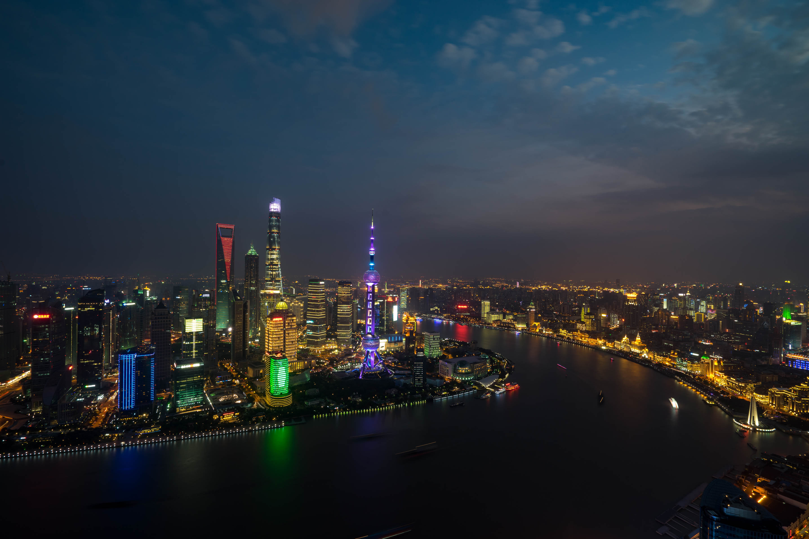
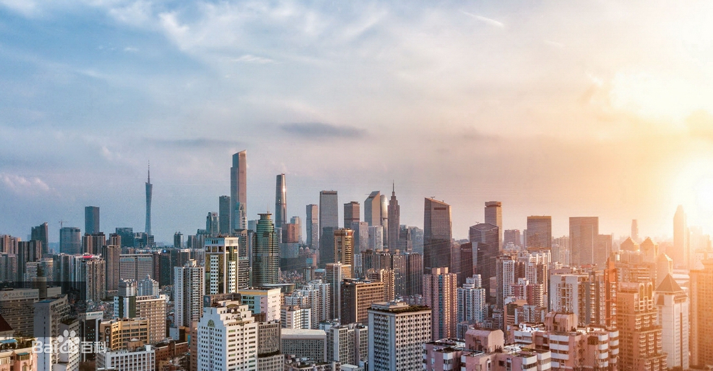

上海
广州
上海（Shanghai），简称“沪”或“申”，是中华人民共和国省级行政区、直辖市、国家中心城市、超大城市，中国国际经济、金融、贸易、航运、科技创新中心 ，国家物流枢纽。全市下辖16个区，总面积6340.5平方千米，2019年常住人口2428.14万人，户籍常住人口1450.43万人，外来常住人口977.71万人。 上海位于长江三角洲地区，地处中国东部、长江入海口、东临东中国海，北、西与江苏、浙江两省相接，界于东经120°52′-122°12′，北纬30°40′-31°53′之间。
战国时，上海是春申君的封邑，故别称申。晋朝时，因渔民创造捕鱼工具“扈”，江流入海处称“渎”，因此松江下游一带称为“扈渎”，后又改“沪”，故上海简称“沪”。2019年，上海市生产总值（GDP）38155.32亿元，按可比价格计算，比上年增长6%。2019年12月15日，荣登中国社会科学院年度中国城市品牌前10强。
广州，简称“穗”，别称羊城、花城，是广东省省会、副省级市、国家中心城市、超大城市，国务院批复确定的中国重要的中心城市、国际商贸中心和综合交通枢纽。截至2018年，全市下辖11个区，总面积7434平方千米，建成区面积1249.11平方千米，常住人口1530.59万人，城镇化率86.46%。
广州地处中国南部、珠江下游、濒临南海，是中国南部战区司令部驻地，国家物流枢纽，国家综合性门户城市，首批沿海开放城市，是中国通往世界的南大门，粤港澳大湾区、泛珠江三角洲经济区的中心城市以及一带一路的枢纽城市。
广州是首批国家历史文化名城，广府文化的发祥地，从秦朝开始一直是郡治、州治、府治的所在地，华南地区的政治、军事、经济、文化和科教中心。从公元三世纪起成为海上丝绸之路的主港，唐宋时成为中国第一大港，是世界著名的东方港市，明清时是中国唯一的对外贸易大港，也是世界唯一两千多年长盛不衰的大港。
广州被全球权威机构GaWC评为世界一线城市 ，每年举办的中国进出口商品交易会吸引了大量客商以及大量外资企业、世界500强企业的投资 ，国家高新技术企业达8700多家，总量居全国前三，集结了全省80%的高校、70%的科技人员，在校大学生总量居全国第一。广州人均住户存款均居全国前三位，人均可支配收入居全省第一位 。广州人类发展指数居中国第一位，国家中心城市指数居中国第三位。福布斯2017年“中国大陆最佳商业城市排行榜”居第二位；中国百强城市排行榜居第三位。
